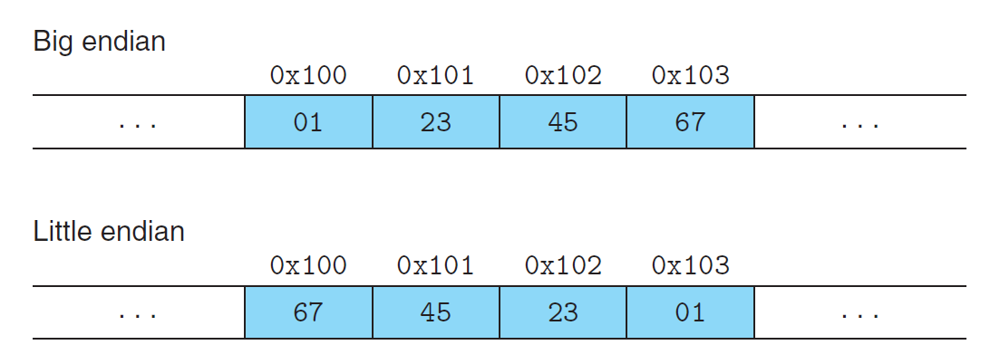

Chap 2: Representing and Manipulating Information⚓︎
约 3231 个字 40 行代码 预计阅读时间 17 分钟
本章会介绍三种最重要的表示数字的方法：无符号数 (unsigned)、补码 (two's complement)（对应符号数）和浮点数 (floating-point)，其中前两者都是整数的表示法。深入了解这些数字表示法，有助于我们在编写的代码在不同机器、操作系统或编译器上能够正确运行，而不会因为数值方面的问题产生 bug，甚至安全漏洞（比如各种溢出
Information Storage⚓︎
前一章介绍过，信息以字节 (byte) 为基本单位（最小的可被处理的内存单元，注意不是位 (bit)
而在之后的章节中，我们会了解到编译器和运行中的程序是怎样将内存空间分为更多的可管理单元，以存储不同的程序对象 (program objects)，即程序数据、指令和控制信息。以 C 语言的指针为例，指针的值为所指程序对象的首字节地址，并且通过类型 (type) 来决定如何读取程序对象的值。
注意
本笔记默认读者了解进制转换相关的知识，这里不再介绍这块内容。
Data Sizes⚓︎
每台计算机都规定了一个字长 (word size)，表示名义上指针数据的大小。由字长决定的最重要的计算机系统参数是虚拟地址空间的最大大小——对于字长为 \(w\) bit 的机器，程序最多能访问 \(2^w\) 个字节。近几年，最常见的机器字长为 32 位（现在已经很少了）或 64 位，前者仅能表示 4GB 大小的虚拟地址空间，而后者可以表示 16EB 的巨大空间。大多数 64 位的机器能够运行由 32 位机器编译的程序（向后兼容-m32 和 -m64 可以分别指定以 32 位或 64 位机器编译 C 程序。
C 语言支持多种整数和浮点数类型，如下表所示：
虽然大多数类型在 32 位或 64 位机器上所代表的字节数是一样的，但还是有部分数据类型的大小随机器字长而发生变化，比如 long 和 char *（以及所有的指针类型）等，因为 C 标准只为类型划定下界（即最少能表示多少字节int32_t、int64_t 等，分别表示 4 字节和 8 字节。
绝大多数数据类型默认编码为符号类型，仅 char 除外。虽然大多数编译器会视 char 为符号类型，但如有必要，还是建议显式声明 signed char，毕竟没有百分百的保证。
Addressing and Byte Ordering⚓︎
对于由多个字节构成的程序对象，我们需要确定两件事：对象的地址是什么，即如何寻址；以及其字节在内存中的排列顺序。
- 寻址 (addressing)：多字节对象是一个连续的字节序列，它的地址即为对象内字节的最小地址（即首字节地址）
-
字节顺序 (byte ordering)：分为小端序和大端序
- 小端序 (little endian)：低位字节在低地址上，高位字节在高地址上。大多数与 Intel 兼容的机器、Android 和 IOS 这两个操作系统采用小端序
- 大端序 (big endian)：低位字节在高地址上，高位字节在低地址上。大多数来自 IBM 和 Oracle 的机器采用大端序
- ARM 微处理器同时支持小端序和大端序
-
对于大多数的应用程序员而言，机器内的字节顺序是“隐形的”。但有时字节顺序将会带来问题（主要来自系统级编程
） ：- 通过网络在不同的机器上进行数据通信：如果一个机器是大端序的，另一个机器是小端序的，且不对数据做任何处理，那么这两台机器因按不同顺序解读字节，从而带来问题。因此，网络应用会按网络标准对数据做一步中间转换，然后再将数据发送给其他机器或者接收数据
-
查看表示整数数据的字节序列：假如我们通过反汇编器 (disassmbler) 将可执行文件的机器码转化为 x86-64 汇编指令：
这条指令对应的机器码的后四个字节
43 0b 20 00对应指令中的0x200b43，而这台机器用小端序表示字节顺序，因此那四个字节为00 20 0b 43，这样就与指令上的数字对应上了 -
不用正常的类型系统编写程序：比如在 C 语言中使用
typedef为类型定义别名
-
下面给出用于检查机器大小端序的 C 语言程序，可以在自己的机器上跑跑看：
代码实现
show-bytes.c#include <stdio.h> typedef unsigned char *byte_pointer; void show_bytes(byte_pointer start, size_t len) { size_t i; for (i = 0; i < len; i++) printf(" %.2x", start[i]); printf("\n"); } void show_int(int x) { show_bytes((byte_pointer) &x, sizeof(int)); } void show_float(float x) { show_bytes((byte_pointer) &x, sizeof(float)); } void show_pointer(void *x) { show_bytes((byte_pointer) &x, sizeof(void *)); } void test_show_bytes(int val) { int ival = val; float fval = (float) ival; int *pval = &ival; show_int(ival); show_float(fval); show_pointer(pval); } int main() { test_show_bytes(12345); return 0; }运行结果（Windows 11 64 位机器上
） ：
Code Representation⚓︎
不同的机器类型采用不同且不兼容的指令和编码。即使是相同的处理器，在不同的操作系统上也会有不同的编码习惯，因此在二进制层面上是不兼容的。总而言之，二进制代码很少能够在不同的机器和操作系统之间兼容。
Boolean Algebra⚓︎
具体内容可见我的数逻笔记 Chap 2 和离散数学笔记 Chap 1 对应部分，这里只讲一些这些笔记里可能没有涉及到的知识或者一些细节问题。
- 掩码 (mask)：一种由从一个字内挑选出来的一组位构成的位模式
- 如果掩码为
0xFF，配合&运算可以获取数据中最低位的字节 - 如果掩码为
~0，配合&与运算可以获取数据中的所有字节
- 如果掩码为
- 虽然逻辑运算也有类似按位运算的与、或等操作，但它的一大不同之处在于“短路”运算——如果逻辑表达式的结果能通过前面的参数判断出来，那么就无需判断甚至计算后面的参数了
- 按位右移分为逻辑 (logical) 右移和算术 (arithmetic) 右移，分别对应无符号数和符号数，并分别采用零扩展和符号扩展的方式在左边填充
- 如果分不清各种运算符的优先级，那就狠狠地加括号吧
Integer Representations⚓︎
下面列出与整数数据和算术运算相关的术语，便于参考，之后的章节就默认读者已经认识这些术语。
Integral Data Types⚓︎
下表展示了 C 语言支持的所有整数类型以及相应的取值范围 (typical range)。可以看到取值范围都是“不对称的”——负数个数多于正数。

但实际上，C 标准要求的范围 (guaranteed range) 则如下所示：
除了定长的数据类型外，其余数据类型的范围变得更小，但是做到了“对称”。
Unsigned Encodings⚓︎
原理
无符号数编码的定义：对于位向量 \(\vec{x} = [x_{w-1}, x_{w-2}, \dots, x_0]\)，对应的二进制 -> 无符号数的函数为：
对于 \(w\) 位二进制数，最大的无符号数 \(UMax_w \doteq 2^w - 1\)，对应的位向量为 \([11 \dots 1]\)。因此函数 \(B2U_w\) 可写作映射：
原理
无符号数编码的唯一性 (uniqueness)：函数 \(B2U_w\) 是一个双射 (bijection)。
因此，\(B2U_w\) 有一个反函数 \(U2B_w\)，可以将一个范围在 \(0 \sim 2^w - 1\) 内的无符号数映射到唯一的一个 \(w\) 位位向量上。
Two's Complement Encodings⚓︎
对于符号数，计算机中最常用的编码是补码 (two's complement)，用最高位表示符号位 (sign bit)。
原理
补码编码的定义：对于位向量 \(\vec{x} = [x_{w-1}, x_{w-2}, \dots, x_0]\)，对应的二进制 -> 补码的函数为：
- 最小的可表示值 \(TMin_w \doteq -2^{w-1}\)，对应位向量 \([10 \dots 0]\)
- 最大的可表示值 \(TMax_w \doteq 2^{w-1} - 1\)，对应位向量 \([01 \dots 1]\)
因此函数 \(B2T_w\) 可写作映射：
原理
补码编码的唯一性 (uniqueness)：函数 \(B2T_w\) 是一个双射 (bijection)。
Signed vs. Unsigned⚓︎
现在将具体值（都是 2 的幂）代入 \(w\)，获得 \(UMax, TMin, TMax\) 等值，结果如下所示：
通过观察发现：
- \(|TMin| = |TMax| + 1\)
- \(UMax = 2TMax + 1\)
- -1 的补码形式的二进制表示与 \(UMax\) 的二进制表示一致
- 在任何编码形式下，0 的二进制形式都是全 0 的字符串
Conversions⚓︎
相同位数的无符号数与符号数之间的转换都遵循一个规则：数值可能会变，但位表示肯定不变。我们用以下函数表示这种转换：
- 补码 -> 无符号数：\(T2U_w(x) \doteq B2U_w(T2B_w(x))\)
- 无符号数 -> 补码：\(U2T_w(x) \doteq B2T_w(U2B_w(x))\)
原理
补码 -> 无符号数：对于 \(x \in [TMin_w, TMax_w]\)，有：
成立
原理
无符号数 -> 补码：对于 \(u \in [0, UMax_w]\)，有：
成立
Signed and Unsigned in C⚓︎
前面提到过，C 语言的大多数数字默认为符号数。如果想要声明无符号数，有以下几种方法：
- 显式：
- 无符号数常量：以
U或u为后缀 - 强制类型转换：使用
(unsigned) var，令var为无符号数
- 无符号数常量：以
- 隐式：
- 将数字赋值给无符号数
- 格式化输出时使用
%u说明符 - 如果是符号数与无符号数之间的运算，那么符号数就会被隐式转化为无符号数
鉴于以上 C 语言规则，下面给出一些数字的比较结果，其中一些结果会出乎读者的意料（用 * 表示，但都可以用隐式转换的第三条规则解释

Numbers Expansion and Truncation⚓︎
整数之间除了有符号数与无符号数之间的转换外，还有不同位长的整数之间的转换，包括扩展 (expansion) 和截断 (trunctation) 两类操作。
注
- 在 C 语言中，通过强制类型转换来同时改变整数类型的大小（位宽）和类型（符号数 / 无符号数）时，会先改变大小，再改变类型。比如
short->unsigned，等价操作为(unsigned) (int) short
Expansion⚓︎
原理
无符号数的零扩展 (zero expansion)：定义位宽为 \(w\) 的位向量 \(\vec{u} = [u_{w-1}, u_{w-2}, \dots, u_0]\)，以及位宽为 \(w'\) 的位向量 \(\vec{u'} = [0, \dots, 0, u_{w-1}, u_{w-2}, \dots, u_0]\)，其中 \(w' > w\)，那么 \(B2U_w(\vec{u}) = B2U_{w'}(\vec{u'})\)。
原理
补码的符号扩展 (sign expansion)：定义位宽为 \(w\) 的位向量 \(\vec{x} = [\underbrace{x_{w-1}}, x_{w-2}, \dots, x_0]\)，以及位宽为 \(w'\) 的位向量 \(\vec{x'} = [\underbrace{x_{w-1}, \dots, x_{w-1}, x_{w-1}}, x_{w-2}, \dots, x_0]\)，其中 \(w' > w\)，那么 \(B2T_w(\vec{x}) = B2T_{w'}(\vec{x'})\)。
Trunctation⚓︎
Integer Arithmetic⚓︎
Unsigned Arithmetic⚓︎
Two's Complement Arithmetic⚓︎
Multiplication⚓︎
Division⚓︎
Floating Point⚓︎
IEEE Floating-Point Representation⚓︎
Rounding⚓︎
Operations⚓︎
Asides⚓︎
-
C 语言的发展史
- 标准：ANSI C -> ISO C90 -> ISO C99 -> ISO C11 -> ISO C18 -> ISO C23
- GCC 编译器允许指定不同的标准进行编译：
C 版本 GCC 命令行选项 GNU 89 -std=gnu89ANSI, ISO C90 -ansi,-std=c89ISO C99 -std=c99ISO C11 -std=c11 -
C 语言中定长的整数类型由
stdint.h标准库引入，提供了形如intN_t和uintN_t的类型，其中N表明位数，可取值有 8, 16, 32, 64- 最小值和最大值则有宏定义
INTN_MIN、INTN_MAX、UINTN_MAX，它们均来自标准库limits.h - 在格式化输出中，这些类型的说明符有
PRId32（表示int32_t） 、 PRIu64（表示uint64_t）等
- 最小值和最大值则有宏定义
-
无符号数的其他表示法
- 反码 (one's complement)：\(B2O_w(\vec{x}) \doteq -x_{w-1}(2^{w-1} - 1) + \sum\limits_{i=0}^{w-2} x_i 2^i\)
- 原码 (sign magnitude)：\(B2S_w(\vec{x}) \doteq (-1)^{x_{w-1}} \cdot \Big(\sum\limits_{i=0}^{w-2} x_i 2^i\Big)\)
之所以不用这些表示法，有一个重要的原因在于它们能够同时表示 +0（[00...0]）和 -0（[11...1]）
评论区